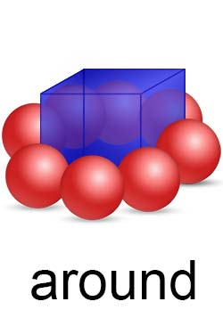
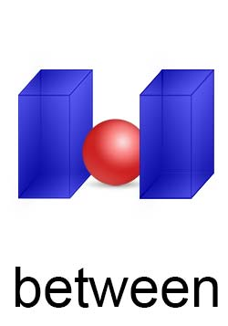
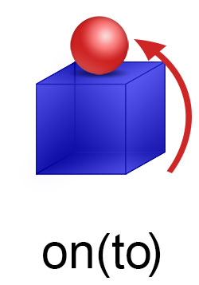

space.relative
description::
· relative-space is space defined in relation to another space.
name::
* McsEngl.relative-space,
* McsEngl.space.relative,
====== langoSinago:
* McsSngo.do-tio!=space.relative,
====== langoGreek:
* McsElln.χώρος.σχετικός,
space.relative.across
description::
· space-across-space is space at right-angle in-relation-to another space.
_stxEngl: _stxSbj:[There] _stxVrb:{is} _stxSbjc:[a bridge] _stxSpace:[(across) the river].
_stxEngl: _stxSbj:[The red bar] _stxVrb:{is lying} _stxSpace:[(across) the blue boxes].
[https://www.englishpage.com/prepositions/position_prepositions.htm]
===
"(adv) transversely, transversally (in a transverse manner) "they were cut transversely""
[http://wordnetweb.princeton.edu/perl/webwn?s=transversely]
"(adj) crosswise (in the shape of (a horizontal piece on) a cross)"
"(adv) across, crosswise, crossways (transversely) "the marble slabs were cut across""
[http://wordnetweb.princeton.edu/perl/webwn?s=crosswise]
name::
* McsEngl.across-space,
* McsEngl.crosswise-space,
* McsEngl.space.across-space,
* McsEngl.syntax.conjEngl.across:space,
* McsEngl.syntax.space.across,
* McsEngl.transversely-space,
====== langoSinago:
* McsSngo.do-crosa-do!=space.across-space,
====== langoGreek:
* McsElln.εγκάρσιος!~adjvElln:-ος-α-ο,
space.relative.above
description::
_stxEngl: _stxSbj:[The red ball] _stxVrb:{is} _stxSpace:[(above) the blue box].
[https://www.englishpage.com/prepositions/position_prepositions.htm]
name::
* McsEngl.above-space,
* McsEngl.over-space,
* McsEngl.space.above-space,
* McsEngl.syntax.conjEngl.above:space,
* McsEngl.syntax.space.above,
* McsEngl.space.over-space,
* McsEngl.syntax.conjEngl.over:space,
space.relative.below
description::

_stxEngl: _stxSbj:[The red ball] _stxVrb:{is} _stxSpace:[(below) the blue box].
[https://www.englishpage.com/prepositions/position_prepositions.htm]
name::
* McsEngl.below-space,
* McsEngl.beneath-space,
* McsEngl.space.below-space,
* McsEngl.syntax.conjEngl.below:space,
* McsEngl.syntax.space.below,
* McsEngl.space.beneath-space,
* McsEngl.syntax.conjEngl.beneath:space,
space.relative.on
description::
_stxEngl: _stxSbj:[The red ball] _stxVrb:{is} _stxSpace:[(on) the blue box].
[https://www.englishpage.com/prepositions/position_prepositions.htm]
name::
* McsEngl.on-space,
* McsEngl.space.on-space,
* McsEngl.syntax.conjEngl.on:space,
* McsEngl.syntax.space.on,
space.relative.under
description::
_stxEngl: _stxSbj:[The red ball] _stxVrb:{is} _stxSpace:[(under) the blue box].
[https://www.englishpage.com/prepositions/position_prepositions.htm]
name::
* McsEngl.under-space,
* McsEngl.underneath-space,
* McsEngl.space.under-space,
* McsEngl.syntax.conjEngl.under:space,
* McsEngl.syntax.space.under,
* McsEngl.space.underneath-space,
* McsEngl.syntax.conjEngl.underneath:space,
space.relative.against
description::

_stxEngl: _stxSbj:[The red bar] _stxVrb:{is lying} _stxSpace:[(against) the blue box].
[https://www.englishpage.com/prepositions/position_prepositions.htm]
name::
* McsEngl.against-space,
* McsEngl.space.against-space,
* McsEngl.syntax.conjEngl.against:space,
* McsEngl.syntax.space.against,
space.relative.among
description::
_stxEngl: _stxSbj:[The red ball] _stxVrb:{is} _stxSpace:[(among) the blue box].
[https://www.englishpage.com/prepositions/position_prepositions.htm]
name::
* McsEngl.among-space,
* McsEngl.space.among-space,
* McsEngl.syntax.conjEngl.among:space,
* McsEngl.syntax.space.among,
space.relative.around
description::

_stxEngl: _stxSbj:[The red balls] _stxVrb:{are} _stxSpace:[(around) the blue box].
[https://www.englishpage.com/prepositions/position_prepositions.htm]
name::
* McsEngl.around-space,
* McsEngl.space.around-space,
* McsEngl.syntax.conjEngl.around:space,
* McsEngl.syntax.space.around,
space.relative.between
description::

_stxEngl: _stxSbj:[The red ball] _stxVrb:{is} _stxSpace:[(between) the blue boxes].
[https://www.englishpage.com/prepositions/position_prepositions.htm]
name::
* McsEngl.between-space,
* McsEngl.space.between-space,
* McsEngl.syntax.conjEngl.between:space,
* McsEngl.syntax.space.between,
space.relative.behind
description::

_stxEngl: _stxSbj:[The red ball] _stxVrb:{is} _stxSpace:[(behind) the blue box].
[https://www.englishpage.com/prepositions/position_prepositions.htm]
name::
* McsEngl.behind-space,
* McsEngl.space.behind-space,
* McsEngl.syntax.conjEngl.behind:space,
* McsEngl.syntax.space.behind,
space.relative.in-front-of
description::

_stxEngl: _stxSbj:[The red ball] _stxVrb:{is} _stxSpace:[(in-front-of) the blue box].
[https://www.englishpage.com/prepositions/position_prepositions.htm]
_stxEngl: _stxSbj:[She] _stxVrb:{walked} _stxSpace:[[(ahead of) Helene] [(up) the steps] [(into) the hotel]]. [HarperCollins]
name::
* McsEngl.ahead-of-space,
* McsEngl.in-front-of-space,
* McsEngl.space.ahead-of--space,
* McsEngl.space.in-front-of-space,
* McsEngl.syntax.conjEngl.ahead-of:space,
* McsEngl.syntax.space.ahead-of,
* McsEngl.syntax.conjEngl.in-front-of:space,
space.relative.beside
description::
_stxEngl: _stxSbj:[The red ball] _stxVrb:{is} _stxSpace:[(beside) the blue box].
[https://www.englishpage.com/prepositions/position_prepositions.htm]
name::
* McsEngl.beside-space,
* McsEngl.next-to-space,
* McsEngl.space.beside-space,
* McsEngl.syntax.conjEngl.beside:space,
* McsEngl.syntax.space.beside,
* McsEngl.space.next-to-space,
* McsEngl.syntax.conjEngl.next-to:space,
space.relative.beyond
name::
* McsEngl.beyond-space,
* McsEngl.space.beyond-space,
* McsEngl.syntax.conjEngl.beyond:space,
* McsEngl.syntax.space.beyond,
====== langoGreek:
* McsElln.παραπέρα,
space.relative.near
description::
_stxEngl: _stxSbj:[The red ball] _stxVrb:{is} _stxSpace:[(near) the blue box].
[https://www.englishpage.com/prepositions/position_prepositions.htm]
_stxEngl: _stxSbj:[He] _stxVrb:{lives} _stxSpace:[(by) a train station].
name::
* McsEngl.by-space,
* McsEngl.near-space,
* McsEngl.space.near-space,
* McsEngl.syntax.conjEngl.near:space,
* McsEngl.syntax.space.near,
* McsEngl.space.by-space,
* McsEngl.syntax.conjEngl.by:space,
====== langoGreek:
* McsElln.κοντά-σε,
space.relative.far-away-from
description::

_stxEngl: _stxSbj:[The red ball] _stxVrb:{is} _stxSpace:[(far-away-from) the blue box].
name::
* McsEngl.far-away-from-space,
* McsEngl.space.far-away-from-space,
* McsEngl.syntax.conjEngl.far-away-from:space,
* McsEngl.syntax.space.far-away-from,
space.relative.inside
description::

_stxEngl: _stxSbj:[The red ball] _stxVrb:{is} _stxSpace:[(inside) the blue box].
[https://www.englishpage.com/prepositions/position_prepositions.htm]
name::
* McsEngl.inside-space,
* McsEngl.space.inside-space,
* McsEngl.syntax.conjEngl.inside:space,
* McsEngl.syntax.space.inside,
====== langoSinago:
* McsSngo.do-esa-do!=space.inside-space,
space.relative.outside
description::

_stxEngl: _stxSbj:[The red ball] _stxVrb:{is} _stxSpace:[(outside) the blue box].
[https://www.englishpage.com/prepositions/position_prepositions.htm]
name::
* McsEngl.outside-space,
* McsEngl.space.outside-space,
* McsEngl.syntax.conjEngl.outside:space,
* McsEngl.syntax.space.outside,
====== langoSinago:
* McsSngo.do-eza-do!=space.outside-space,
space.relative.in
description::
_stxEngl: _stxSbj:[The red ball] _stxVrb:{is} _stxSpace:[(in) the blue box].
[https://www.englishpage.com/prepositions/position_prepositions.htm]
name::
* McsEngl.in-space,
* McsEngl.space.in-space,
* McsEngl.syntax.conjEngl.in:space,
* McsEngl.syntax.space.in,
space.relative.through
description::

_stxEngl: _stxSbj:[The red ball] _stxVrb:{is running} _stxSpace:[(through) the blue box].
[https://www.englishpage.com/prepositions/position_prepositions.htm]
name::
* McsEngl.through-space,
* McsEngl.space.through-space,
* McsEngl.syntax.conjEngl.through:space,
* McsEngl.syntax.space.through,
space.relative.elsewhere
description::
· elsewhere is space different than the-space of context.
name::
* McsEngl.elsewhere-space,
* McsEngl.space.elsewhere,
=== langoGreek:
* McsElln.αλλού!~advb,
space.relative.left
description::
· left-space is space on the-left-hand of the-person in context.
name::
* McsEngl.left-space,
* McsEngl.space.left,
=== langoGreek:
* McsElln.αριστερά!~advb,
space.relative.right
description::
· right-space is space on the-right-hand of the-person in context.
name::
* McsEngl.right-space,
* McsEngl.space.right,
=== langoGreek:
* McsElln.δεξιά!~advb,
space.relative.east
description::
· east-space is definiteNo space relative to current-space and the-direction of the-sunrise.
space.relative.west
description::
· west-space is definiteNo space relative to current-space and the-direction of the-sunset.
space.relative.north
description::
· north-space is definiteNo space relative to current-space and the-direction left of the-sunrise.
name::
* McsEngl.north-space,
* McsEngl.space.relative.north,
space.relative.south
description::
· north-space is definiteNo space relative to current-space and the-direction right of the-sunrise.
name::
* McsEngl.south-space,
* McsEngl.space.relative.south,
space.relative.direction
description::
· space-direction is a-sequence of two spaces.
===
"(adj) oriented, orientated (adjusted or located in relation to surroundings or circumstances; sometimes used in combination) "the house had its large windows oriented toward the ocean view"; "helping freshmen become oriented to college life"; "the book is value-oriented throughout""
[http://wordnetweb.princeton.edu/perl/webwn?s=oriented]
name::
* McsEngl.space.relative.direction!⇒space-direction,
* McsEngl.space-direction.
relation of space-direction
description::
· space-direction-relation is the-relation between the-spaces of the-space-direction.
name::
* McsEngl._stxDirection,
* McsEngl.space-direction'relation,
* McsEngl.space-direction-relation,
space-direction.SPECIFIC
description::
* left,
* right,
* up,
* down,
* forward,
* backward,
* leftward,
* rightward,
* upward,
* downward,
space.relative.direction.across
description::

_stxEngl: _stxSbj:[The red ball] _stxVrb:{bounce} _stxDirection:[(across) the blue line].
[https://www.englishpage.com/prepositions/direction_prepositions.htm]
name::
* McsEngl.across-space-direction,
* McsEngl.space-direction.across,
* McsEngl.syntax.conjEngl.across:space-direction,
* McsEngl.syntax.direction.across,
space.relative.direction.against
description::
_stxEngl: _stxSbj:[The red ball] _stxVrb:{rolled} _stxDirection:[(against) the blue box].
[https://www.englishpage.com/prepositions/direction_prepositions.htm]
name::
* McsEngl.against-space-direction,
* McsEngl.space-direction.against,
* McsEngl.syntax.conjEngl.against:space-direction,
* McsEngl.syntax.direction.against,
space.relative.direction.along
description::
_stxEngl: _stxSbj:[The red ball] _stxVrb:{is rolling} _stxDirection:[(along) the blue line].
[https://www.englishpage.com/prepositions/direction_prepositions.htm]
name::
* McsEngl.along-space-direction,
* McsEngl.space-direction.along,
* McsEngl.syntax.conjEngl.along:space-direction,
* McsEngl.syntax.direction.along,
space.relative.direction.around
description::
_stxEngl: _stxSbj:[The red ball] _stxVrb:{is rolling} _stxDirection:[(around) the blue box].
[https://www.englishpage.com/prepositions/direction_prepositions.htm]
name::
* McsEngl.around-space-direction,
* McsEngl.space-direction.around,
* McsEngl.syntax.conjEngl.around:space-direction,
* McsEngl.syntax.direction.around,
space.relative.direction.away-from
description::
_stxEngl: _stxSbj:[The red ball] _stxVrb:{is rolling} _stxDirection:[(away from) the blue box].
· He walked away from me. has object "me"
· He walked away. no object
[https://www.englishpage.com/prepositions/direction_prepositions.htm]
name::
* McsEngl.away-from-space-direction,
* McsEngl.space-direction.away-from,
* McsEngl.syntax.conjEngl.away-from:space-direction,
* McsEngl.syntax.direction.away-from,
space.relative.direction.from
description::

_stxEngl: _stxSbj:[The red ball] _stxVrb:{is coming} _stxDirection:[(from) the blue box].
[https://www.englishpage.com/prepositions/direction_prepositions.htm]
name::
* McsEngl.from-space-direction,
* McsEngl.space-direction.from,
* McsEngl.syntax.conjEngl.from:space-direction,
* McsEngl.syntax.direction.from,
space.relative.direction.towards
description::

_stxEngl: _stxSbj:[The red ball] _stxVrb:{is rolling} _stxDirection:[(towards) the blue box].
[https://www.englishpage.com/prepositions/direction_prepositions.htm]
_stxEngl: [The crowds (became) violent] [(and) [(threw) [petrol bombs] [(at) the police]]]. [HarperCollins]
name::
* McsEngl.to-space-direction,
* McsEngl.towards-space-direction,
* McsEngl.space-direction.at,
* McsEngl.space-direction.to,
* McsEngl.space-direction.towards,
* McsEngl.syntax.conjEngl.to:space-direction,
* McsEngl.syntax.conjEngl.towards:space-direction,
* McsEngl.syntax.direction.towards,
space.relative.direction.down
description::
_stxEngl: _stxSbj:[The red ball] _stxVrb:[is rolling] _stxDirection:[(down) the blue stairs].
[https://www.englishpage.com/prepositions/direction_prepositions.htm]
name::
* McsEngl.down-space-direction,
* McsEngl.space-direction.down,
* McsEngl.syntax.conjEngl.down:space-direction,
* McsEngl.syntax.direction.down,
space.relative.direction.up
description::
_stxEngl: _stxSbj:[The red ball] _stxVrb:{is rolling} _stxDirection:[(up) the blue stairs].
[https://www.englishpage.com/prepositions/direction_prepositions.htm]
name::
* McsEngl.up-space-direction,
* McsEngl.space-direction.up,
* McsEngl.syntax.conjEngl.up:space-direction,
* McsEngl.syntax.direction.up,
space.relative.direction.into
description::
_stxEngl: _stxSbj:[The red ball] _stxVrb:{is bouncing} _stxDirection:[(into) the blue box].
· Sherry walked into the house. has object "the house"
· Sherry walked in. no object
[https://www.englishpage.com/prepositions/direction_prepositions.htm]
name::
* McsEngl.in-space-direction,
* McsEngl.into-space-direction,
* McsEngl.space-direction.in,
* McsEngl.syntax.conjEngl.in:space-direction,
* McsEngl.space-direction.into,
* McsEngl.syntax.conjEngl.into:space-direction,
* McsEngl.syntax.direction.into,
space.relative.direction.out-of
description::
_stxEngl: _stxSbj:[The red ball] _stxVrb:{is bouncing} _stxDirection:[(out of) the blue box].
· Katie jumped out of the boat. has object "boat"
· Katie jumped out. no object
[https://www.englishpage.com/prepositions/direction_prepositions.htm]
name::
* McsEngl.out-of-space-direction,
* McsEngl.space-direction.out-of,
* McsEngl.syntax.conjEngl.out-of:space-direction,
* McsEngl.syntax.direction.out-of,
space.relative.direction.off-of
description::

_stxEngl: _stxSbj:[The red ball] _stxVrb:[is rolling] _stxDirection:[(off of) the blue box].
[https://www.englishpage.com/prepositions/direction_prepositions.htm]
name::
* McsEngl.off-of-space-direction,
* McsEngl.space-direction.off-of,
* McsEngl.syntax.conjEngl.off-of:space-direction,
* McsEngl.syntax.direction.off-of,
space.relative.direction.over
description::
_stxEngl: _stxSbj:[The red ball] _stxVrb:{is bouncing} _stxDirection:[(over) the blue box].
[https://www.englishpage.com/prepositions/direction_prepositions.htm]
name::
* McsEngl.over-space-direction,
* McsEngl.space-direction.over,
* McsEngl.syntax.conjEngl.over:space-direction,
* McsEngl.syntax.direction.over,
space.relative.direction.under
description::

_stxEngl: _stxSbj:[The red ball] _stxVrb:[is rolling] _stxDirection:[(under) the blue box].
[https://www.englishpage.com/prepositions/direction_prepositions.htm]
name::
* McsEngl.under-space-direction,
* McsEngl.space-direction.under,
* McsEngl.syntax.conjEngl.under:space-direction,
* McsEngl.syntax.direction.under,
space.relative.direction.onto
description::

_stxEngl: _stxSbj:[The red ball] _stxVrb:{is bouncing} _stxDirection:[(onto) the blue box].
[https://www.englishpage.com/prepositions/direction_prepositions.htm]
name::
* McsEngl.onto-space-direction,
* McsEngl.space-direction.onto,
* McsEngl.syntax.conjEngl.onto:space-direction,
* McsEngl.syntax.direction.onto,
space.relative.direction.through
description::
_stxEngl: _stxSbj:[The red ball] _stxVrb:{is rolling} _stxDirection:[[(through) the hole] [(in) the blue box]].
[https://www.englishpage.com/prepositions/direction_prepositions.htm]
name::
* McsEngl.through-space-direction,
* McsEngl.space-direction.through,
* McsEngl.syntax.conjEngl.through:space-direction,
* McsEngl.syntax.direction.through,